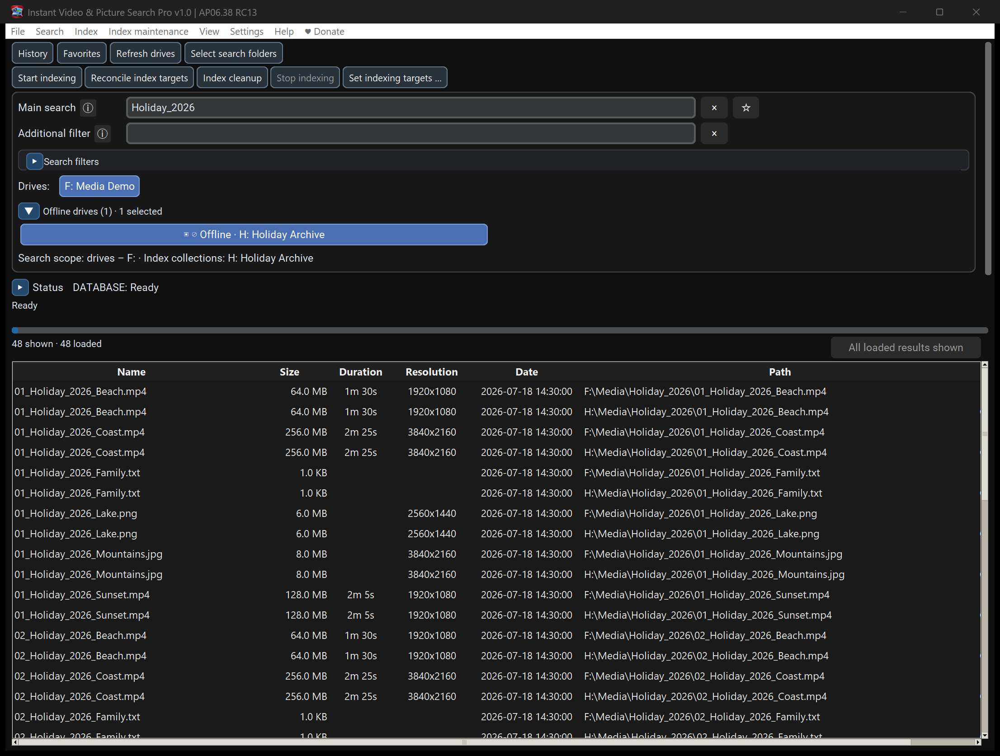
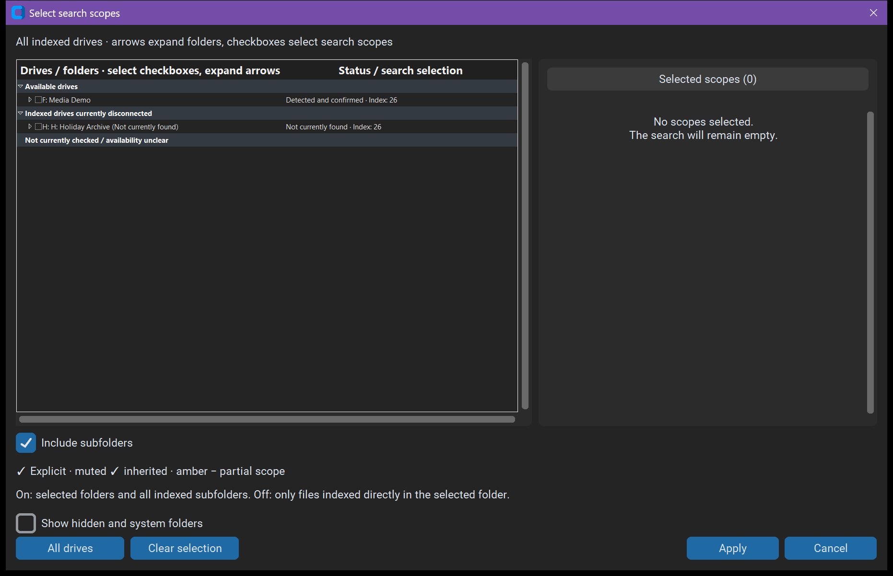
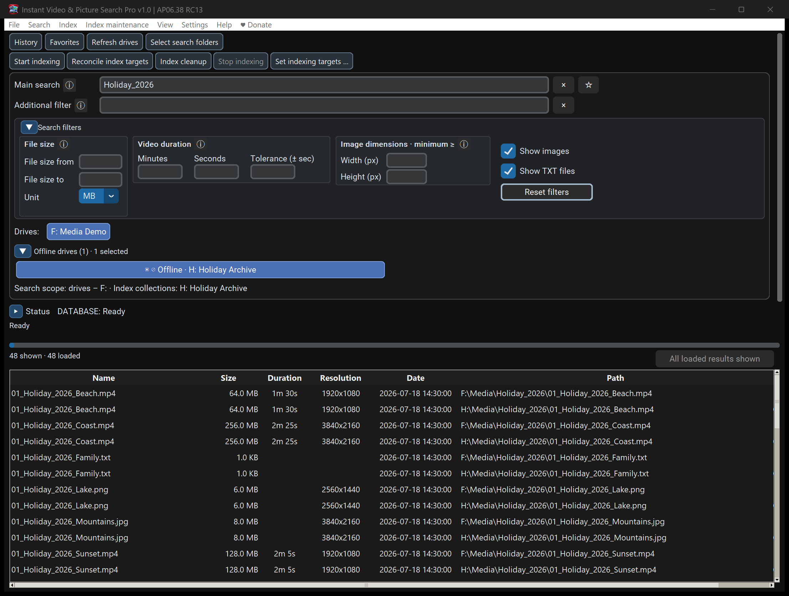
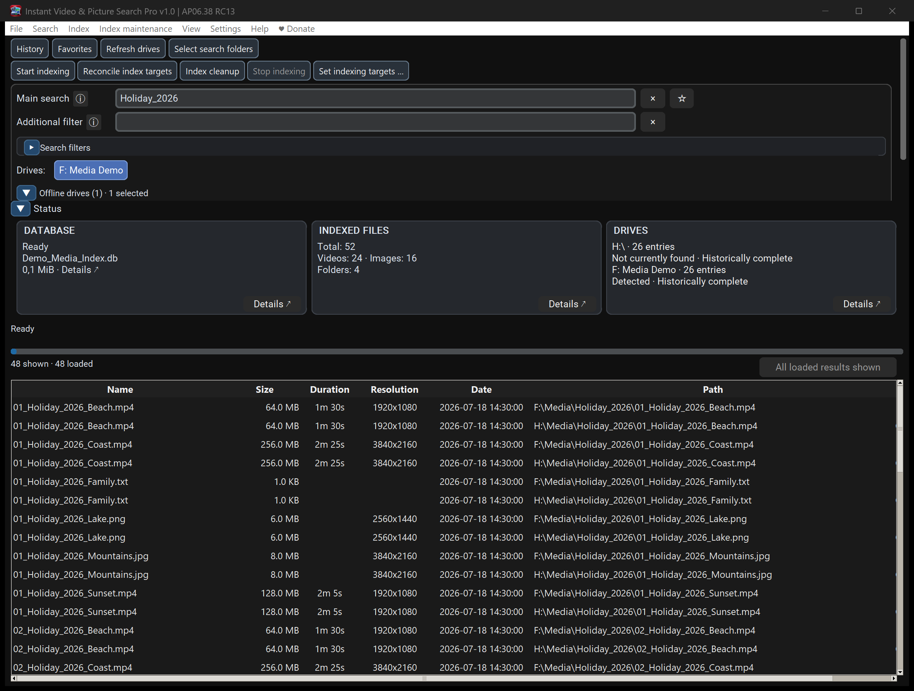

Index once, find files quickly
Search local indexes instead of scanning every drive again for each query.
Index your selected files once. Then search file names and stored paths quickly through a local index – across large collections and multiple drives.
In practical use so far, searches have often taken around one second. This is an observed result, not a guaranteed search time: the index, query and computer all matter.
Local database. No cloud search service. German & English.
Search local indexes instead of scanning every drive again for each query.
Open reachable files or go directly to their location in Windows Explorer.
Filter by file size, video length and image dimensions; reuse history and favourites.



LESS SEARCHING. MORE FINDING.
On your computer or an external drive: find supported files using their saved names, paths and metadata.
Once your files are indexed, the application searches the local database. Your drives do not need a complete scan for every new query.
Manage internal and external drives. Previously saved entries can still be searched when the corresponding drive is disconnected.
Open a result in its associated Windows application or show its location in Explorer. The original file needs to be accessible.
Find videos, images and supported TXT files by filename or path. The additional text filter narrows your main search.
Previously indexed files remain searchable using their saved information when a drive is disconnected. Stored drive identities distinguish the collections. To open a file, its matching drive must be available again.
Choose individual indexed folders or entire saved collections. Decide whether to include subfolders in your search scope.
Filter by file size range and saved width and height. Show or hide images in your search results.
Combine minutes, seconds and a tolerance. Missing metadata can exclude a file when a numeric filter is active.
Save main search terms as favorites or revisit your history. Deliberately update the index when your collection changes.
Searching the existing SQLite index needs no cloud search service. A disconnected drive remains searchable through its saved entries; opening a file requires access to the original.
The index stores names, paths and metadata. There is no built-in video player or AI recognition of image subjects or faces.
HOW IT WORKS
Search scopes and indexing targets do different jobs. You choose which real files to index and which saved collections to search.
Select the already indexed drives whose entries you want to search. This selection does not start a full indexing run.

Separately choose the accessible drives or folders for indexing. Check the actual paths and subfolder setting in the preview.
Confirm the run after checking its targets. Elapsed time and checked files show progress; remaining time appears only when there is a reliable basis.
Enter part of a filename or path in the main search. Use the additional text filter to narrow the results further.
Narrow results by file size, video duration or image dimensions. Show images and Reset filters are part of the same filter group.
Use the result action to open a file in its associated Windows application. The folder action opens its location in Explorer; a disconnected drive must first be made accessible.
Windows gadgets and practical tools for the desktop and system administration.
Manage and organise films and series clearly.
FAQ
The essential answers before your first indexing run.
A local Windows application for searching saved information about supported videos, images and TXT files. It searches names, paths and available metadata, not the content of an image.
An explicitly confirmed run reads the selected real drives or folders and stores file information in a local SQLite database. Large collections can take time; access or analysis errors can leave a run incomplete.
No. Normal search uses saved index entries. When files are added or changed, a deliberately started index update can reconcile the saved collection.
Yes, if their files have previously been indexed in the active database. You can search several indexed collections together.
Yes. Search folders narrow the saved index entries, optionally including subfolders. Real indexing targets are selected independently.
Additional text, file size range, minimum width and height, and video duration with a tolerance in seconds. Images can be shown or hidden. Numeric filters use saved metadata.
The file action opens an accessible video in its associated Windows application. Instant Video & Picture Search Pro does not include a player; playback depends on your default application and its format support.
Yes. An accessible image opens through its normal Windows file association. The index replaces neither the original file nor an image viewer.
Yes. The folder action shows an accessible file’s location in Windows Explorer. Disconnected or ambiguously assigned drives remain subject to accessibility and identity checks.
Searching the local index needs no cloud search service. Saved entries from disconnected drives can also be searched; this does not make the original files available.
In the local SQLite file you explicitly select. Existing user settings remain in the ExplorerSuche area of the local Windows application data. The index stores file information, not complete media copies.
Its saved index can still be selected for searching. Opening files requires the drive to be safely accessible again. A matching drive letter alone does not prove identity.
Free proprietary freeware for private and commercial use. The publisher tested this program version on the development PC.
Extract the full ZIP to a writable folder. Keep _internal and Lizenzen next to the EXE. Run Instant-Video-Picture-Search-Pro.exe. Windows may display origin warnings. Verify the source and SHA-256.
A file such as Urlaub_2026_Familie.txt can mark files in its folder for search. The search uses its name and path, not its contents. Matching markers add bounded folder context. “Show TXT files” controls visible TXT results without removing their marker role. File size ranges, video duration and dimensions use indexed metadata. History, favorites, the system tray, Windows startup and optional index updates support local search. Offline indexes remain searchable; opening files requires the correct connected drive. No AI content search.
Search history opens from the main search field. The query remains editable after selection. Connected drives are detected at startup. Use Refresh drives to update the list. The manual update check in Help reads the version manifest over HTTPS and can open the download page.
Publisher, privacy and licensing · Freeware terms
The program is free. You can voluntarily support its further development. PayPal.Me · PayPal app / QR code